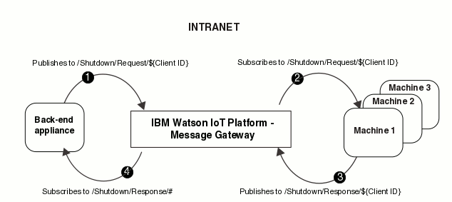

Scenario: Fan-out per device request-reply
In this scenario, one publisher device publishes messages to many topic strings. Each message has only one subscriber device. Each subscriber device publishes reply messages to the publisher device.
Background to this scenario
A company wants to be able to complete remote emergency shutdowns on machines that are located within its various factories. A request is published from a centralized back-end system that runs in the company intranet, and a response is required from each machine to confirm that the shutdown is complete. The back-end application is a publisher and subscriber device on the intranet. The machines are publisher and subscriber devices on the intranet. Eclipse Amlen sits within the intranet. Complete the steps in the following section to understand how to set up this scenario.
Planning and implementing the solution
Use the following information to help you to plan and implement a fan-out per device request-reply scenario.
- Understanding your publish/subscribe architecture
In this scenario, one publisher device publishes messages to many topic strings. Each message has only one subscriber device. Each subscriber device publishes reply messages to the publisher device. This scenario is a fan-out per device request-reply. The following diagram shows the architecture of a fan-out per device request-reply scenario.

- Understanding the required messaging behavior for your solution
Do you want durable or non-durable subscriptions? What quality of service do you need?
If a subscription is durable, when the subscribing application disconnects, the subscription remains in place and can be used by the subscribing application when it reconnects. In this scenario, the subscriptions are durable because it is important that the devices receive the request and response messages even if the connection is lost.
A quality of service of 1 is appropriate because the message delivery across the network must be guaranteed at least once. It is acceptable to have duplicates as any duplicates can be discarded. QoS 1 messages are persistent. The message is stored on Eclipse Amlen until the message is received by the subscriber of the message.
- Planning your solution
- In this scenario, consider the following key points:
- Which protocol is appropriate?
Eclipse Amlen natively supports MQTT and JMS. You can also install your own protocol by using the protocol plug-in. You must consider which protocol is appropriate for your business needs. The amount of data that is sent between the devices is small. The messages between the devices must be sent reliably. The MQTT protocol is designed for exchanging messages between small devices on low bandwidth, or expensive connections, and to send messages reliably. Therefore, MQTT protocol is appropriate in this scenario.
- What message size is appropriate?
In this scenario, the back-end appliance and the machines send small, persistent messages. The information that is contained within the message is about shutting down. Therefore, the message can be relatively small. You can limit the message size that is allowed to be sent through Eclipse Amlen by using the maximum message size attribute of an endpoint. For more information about endpoints, see Message hub, endpoints, and policies.
- What message count is appropriate?
Consider what maximum message count is sensible for your messaging needs. In this scenario, the quality of service is 1, so messages are stored until a subscriber receives the message. Therefore, a higher message count might typically be considered. However, as each device publishes and subscribes to unique topic strings, a lower maximum message count is sufficient.
- What is the maximum number of topic levels that you need?
You can have up to 32 levels in a topic string. Fewer levels are easier to manage, but many levels might be required to set up specific solutions. In this scenario, the topic string length can be relatively short. For example,
Shutdown/Request/DeviceIDorShutdown/Response/DeviceID. - How are you going to ensure that all of your client IDs are unique?
In this scenario, it is crucial that all client IDs are unique so that the shutdown response from each machine is recorded against the correct machine. For example, you might decide to use the device ID as that number is unique to each machine. Therefore in this scenario the client ID is set to be the device ID of the machine.
- What message depth is appropriate?
You can specify the maximum message depth by setting the maximum message count attribute of a topic policy. When the maximum message depth is reached, you cannot publish any more messages to that topic string until the number of messages is reduced. However, as each machine publishes and subscribes to unique topic strings, the maximum message depth does not need to be as large as it would be if all machines published and subscribed to the same topic string.
For more information about planning your solution, see Planning.
- Which protocol is appropriate?
- Writing your applications
In this scenario, you must decide the name of the topic strings that you are publishing and subscribing to. The company needs many topic strings because they are sending requests to, and receiving responses from many machines. For this messaging pattern, the machines publish and subscribe to their unique topic strings. By using the unique client ID in the topic string, you can ensure that each topic is unique. All response topic strings must be subscribed to by the intranet device.
To ensure that machines do not publish to an incorrect topic string, you can use the topic string variable substitution available in the Eclipse Amlen topic policies. By using topic string variable substitution, you can create a topic policy with single topic string that includes a client ID variable. This substitution ensures that applications can publish and subscribe only to the topic string that matches their client ID. For example, a topic string of
Shutdown/Response/${ClientID}is specified in the topic policy. The application with a client ID of 123 is allowed to publish toShutdown/Response/123, but is not allowed to publish toShutdown/Response/456, orShutdown/Response/789because the client ID does not match. For more information about topic policies and variable substitution, see Messaging policies.You can also use the topic string variable substitution to ensure that applications do not subscribe to an incorrect topic string. For example, if you specify a topic string of
Shutdown/Request/${ClientID}in the topic policy, then only the application with a client ID of 123 is allowed to subscribe toShutdown/Request/123.In this scenario, the name of the request topic string is
Shutdown/Request/${ClientID}. The name of the response topic string isShutdown/Response/${ClientID}.The order in which your applications perform publish and subscribe actions is important. Both the client and the back-end application must subscribe to the relevant topic string before any messages are published. Otherwise, messages might be published but not received as no subscription was set up at the time that the message was published.
The following diagram shows this message flow between client and back-end devices through Eclipse Amlen. 
- The back-end appliance publishes a message to the topic string
Shutdown/Request/${ClientID}. - The message is sent to the machine that is authorized to subscribe
to topic string
Shutdown/Request/${ClientID}. - The machine publishes a response to
Shutdown/Response/${ClientID}. - The message is sent to the back-end appliance that is authorized
to subscribe to topic string
Shutdown/Response/#.
- The back-end appliance publishes a message to the topic string
- Setting up your Eclipse Amlen infrastructure, and security
Create the infrastructure by configuring message hubs and endpoints. Set up your security by creating connection and topic policies.
In this scenario, the company requires one message hub because there is one goal - shutting down machines. The company requires one endpoint.
Complete the following steps to set up a message hub and endpoint for this scenario:
- Create your message hub. A message hub is an organizational configuration object to collect the
endpoints, connection policies, and topic policies that are associated with a specific goal
in a single place. In this scenario, the message hub is called
Shutdown Hub. - Create your connection policies. A connection policy is used to
authorize an application to connect to an endpoint.
- Create one connection policy for the applications. In this scenario,
the connection policy is called
Shutdown Intranet ConPol.In this scenario, the company restricts access so that the applications must use MQTT protocol, and use the IP address range
192.0.2.020-192.0.2.255. Only one IP address is required because only one back-end system is publishing and subscribing.
- Create one connection policy for the applications. In this scenario,
the connection policy is called
- Create your topic policies. A topic policy is a type of messaging policy that used to authorize
an application to publish or subscribe to a topic.
- Create two topic policies for the machines. Set up a messaging user group called
Machine Groupthat contains the device IDs of the machines. Set up your machine topic policies so that access is restricted based on this messaging user group name. In this scenario, the request topic policy is calledShutdown Request Machine TopicPoland the response topic policy is calledShutdown Response Machine TopicPol.Shutdown Request Machine TopicPolauthorizes a machine to subscribe to the topic stringShutdown/Request/${ClientID}.Shutdown Response Machine TopicPolauthorizes a machine to publish toShutdown/Response/${ClientID}. - Create two topic policies for the back-end. In this scenario, the request topic policy
is called
Shutdown Request Backend TopicPoland the response topic policy is calledShutdown Response Backend TopicPol. You can set up these topic policies so that access is restricted based on the IP address of the back-end appliance.Shutdown Request Backend TopicPolauthorizes the back-end application to publish to the topic stringShutdown/Request/${ClientID}.Shutdown Response Backend TopicPolauthorizes the back-end application to subscribe toShutdown/Response/#.
- Create two topic policies for the machines. Set up a messaging user group called
- Create your endpoint. An endpoint authorizes an application to
connect to Eclipse Amlen on
one, or all configured ethernet interfaces, and a specific port.
You create endpoints on a message hub.
- Create an endpoint for intranet network requests. In this scenario, the endpoint is called
Shutdown Intranet Endpoint. Apply all of your connection and topic policies to the endpoint.
- Create an endpoint for intranet network requests. In this scenario, the endpoint is called
- Create your message hub. A message hub is an organizational configuration object to collect the
endpoints, connection policies, and topic policies that are associated with a specific goal
in a single place. In this scenario, the message hub is called
- Testing your solution
For information about troubleshooting any problems that arise during testing, see Troubleshooting.
- Monitoring your solution
There are various statistics that you can monitor. In this scenario, use topic monitor, connection monitor, and subscription monitor to understand the health of the solution.
- Strengthening your security
You can increase the level of security of a solution in a number of ways:
- Using a server certificate.
- Create a certificate profile.
- Create a security profile to encrypt wire
traffic.
- Set UsePasswordAuthentication to
Trueon your security profile in order to force authentication on user ID and password.
- Set UsePasswordAuthentication to
- Apply the security profile to your endpoints.
- Add the server certificate that you are using to the clients so that the clients can authenticate the server.
For more information about certificates, see Transport Layer Security.
- Using a client certificate. You must have a sever certificate
installed before you use a client certificate.
- Upload a client certificate, or CA certificate and key on each client.
- Add the specific client certificate, or the CA certificate to the trustStore on Eclipse Amlen. The trustStore points to a file containing trusted certificates, so that the server can authenticate the client.
- Using FIPS.
FIPS increases message security by using cryptography that complies with the Federal Information Processing Standards (FIPS). Enable FIPS mode by setting the FIPS parameter to
True. You can set FIPS toTrueeither by using REST Administration APIs, or by using the Amlen WebUI. For more information about enabling FIPS mode, see Configuring security.
- Using a server certificate.